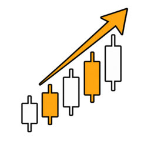

NAK Solana Bot
Momentum trading bot for Solana meme coins. It watches Pump.fun and Raydium, buys confirmed pumps, and runs pre-buy rug and honeypot checks before every trade.
How it works
Default settings. Every value is configurable in .env.
Two discovery sources
PumpPortal streams new Pump.fun launches and Raydium migrations in real time. GeckoTerminal is polled every 90 seconds for trending and newly listed pools across Solana.
Own price history
Jupiter prices are polled every 10 seconds and kept as a rolling history in memory, so momentum is computed from real observations. The watchlist persists across restarts.
Live dashboard
Run the bot and open localhost:8090 for open positions, closed trades, top movers and an equity curve. It runs on your machine, not on this page.
Safety filters
Checked right before each buy. They reduce risk, they do not remove it.
Liquidity floor
Rejects pools under $5,000 of liquidity.
Mint authority revoked
Rejects tokens whose creator can still mint new supply.
Freeze authority revoked
Rejects tokens whose creator can freeze accounts, the classic honeypot switch.
LP lock and holders
Via RugCheck: at least 50% of LP locked or burned, and no single holder above 30% of supply. Fails closed if unindexed.
Entry quality
Minimum token age, volume confirmation and a copycat filter that keeps only the most liquid look-alike.
Circuit breakers
A $50 daily loss limit and a cooldown after 3 losing closes in a row pause all new buys.
Quick start
Python 3. Leave DRY_RUN=true for your first run to simulate trades on real market data.
git clone https://github.com/NadirAliOfficial/nak-solana-bot.git cd nak-solana-bot python3 -m venv .venv && source .venv/bin/activate pip install -r requirements.txt cp .env.example .env # add your RPC URL and a dedicated burner wallet key python -m src.main # dashboard at http://localhost:8090
Risk warnings
- Most Pump.fun launches are abandoned or drained by their creator within minutes. Momentum alone catches many of them.
- Some tokens block selling entirely. A stop loss cannot force an exit the contract does not allow.
- The bot does not guarantee profit and can lose the full amount in a position. Use a dedicated burner wallet with only what you can afford to lose.
- This is software, not financial advice. Swap execution has not been verified against a funded wallet, so test with a small amount first.